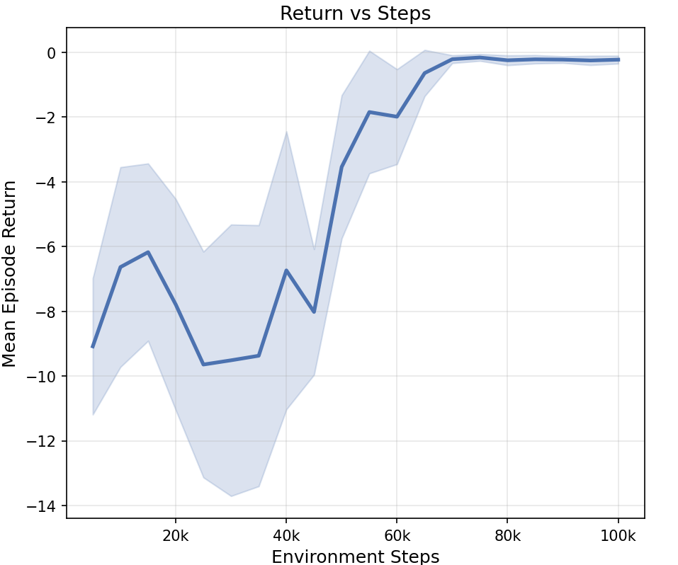
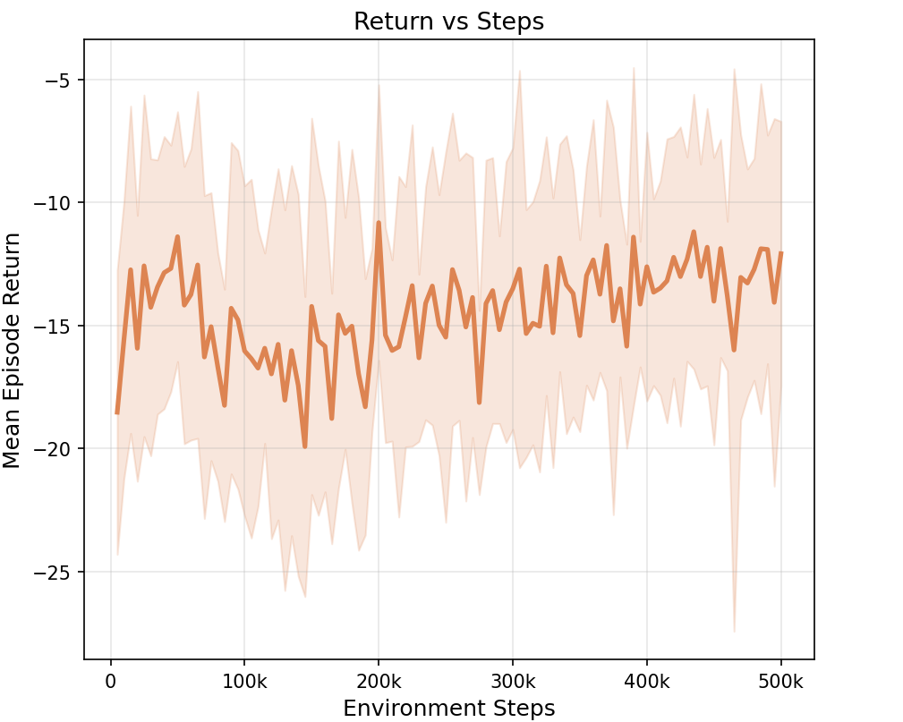
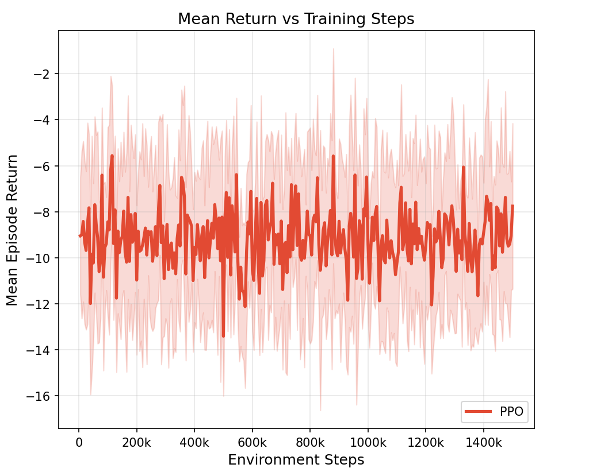
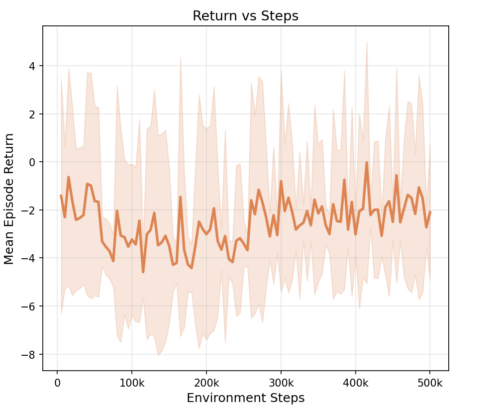
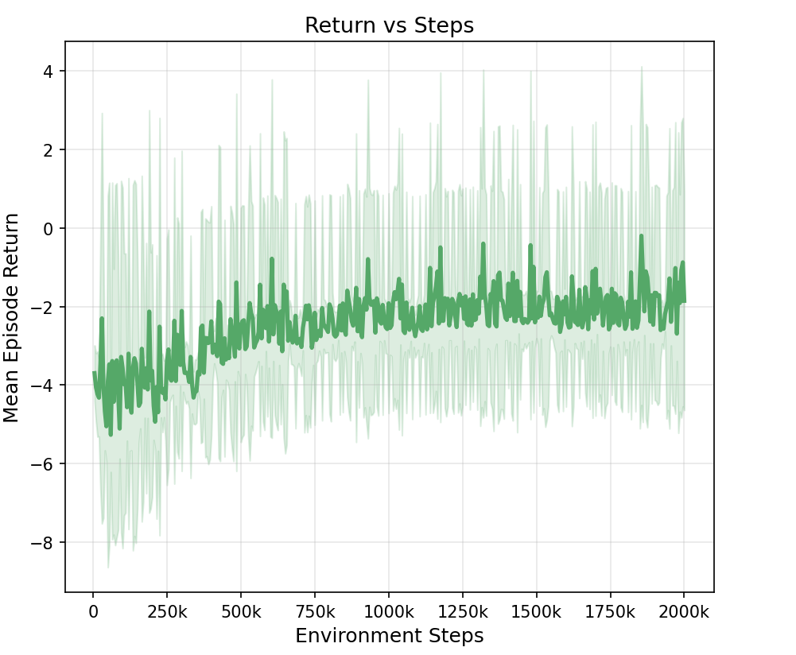
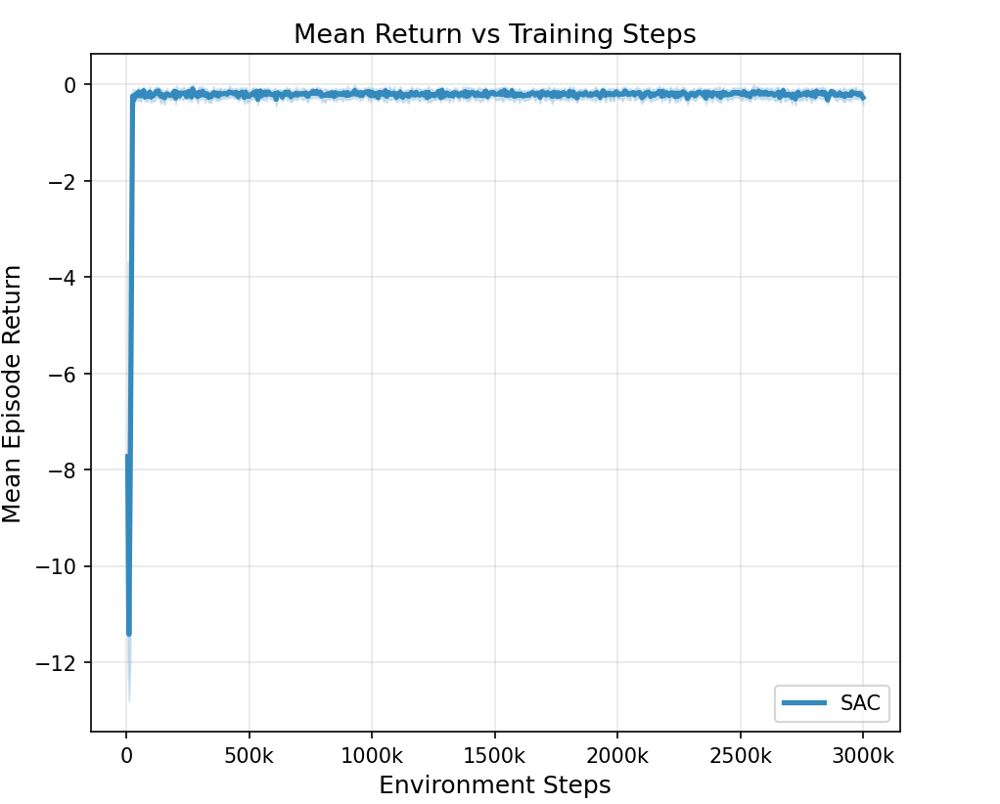
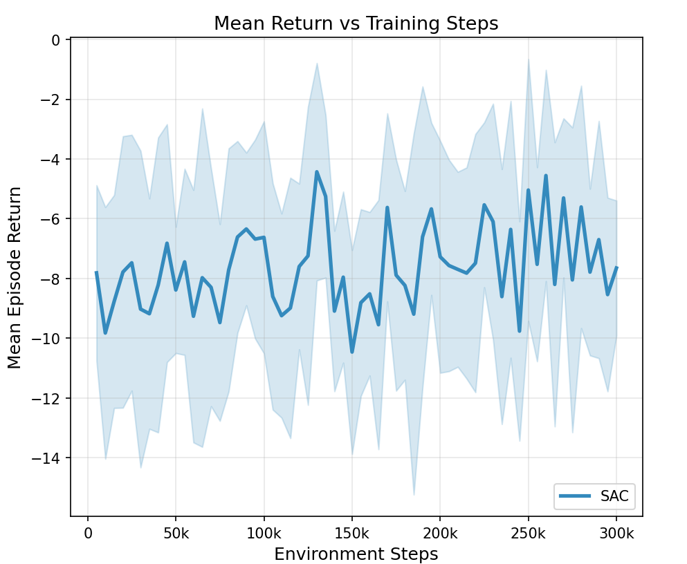
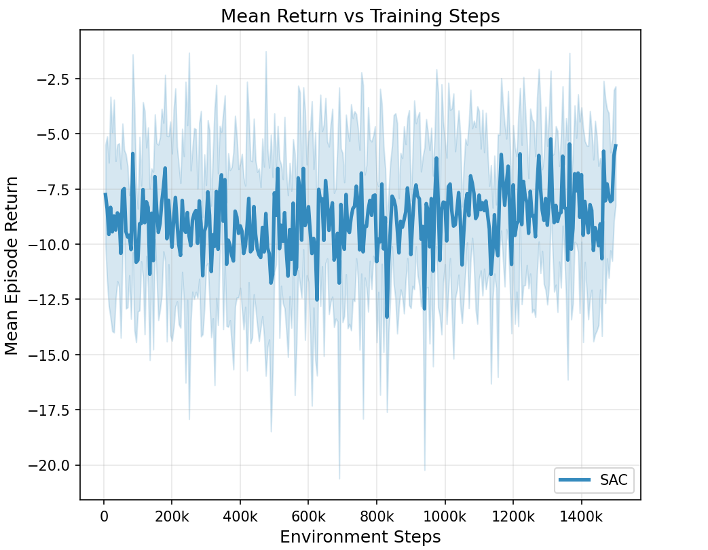
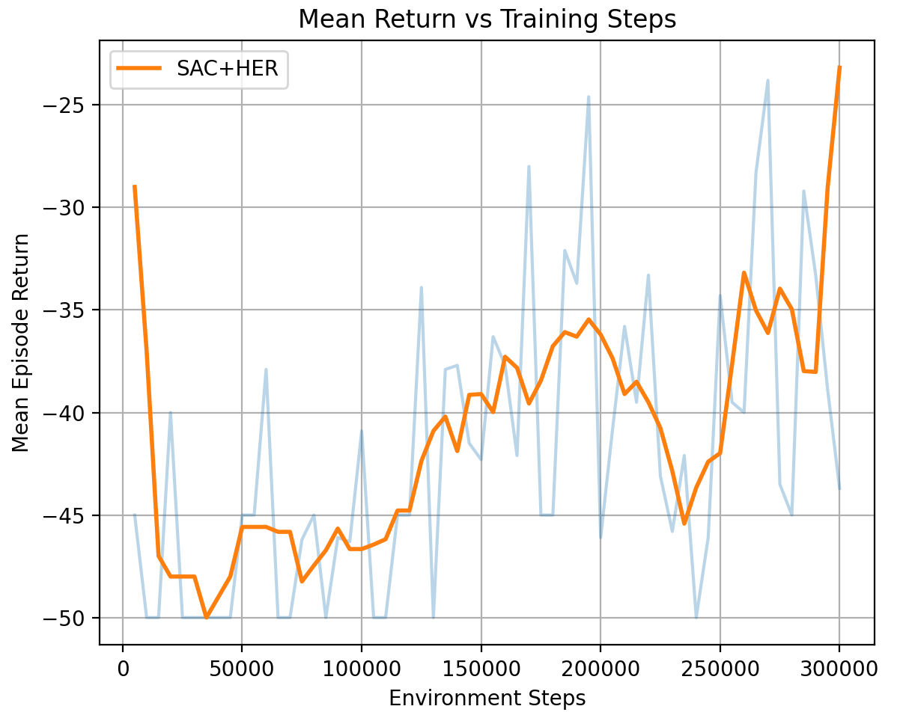
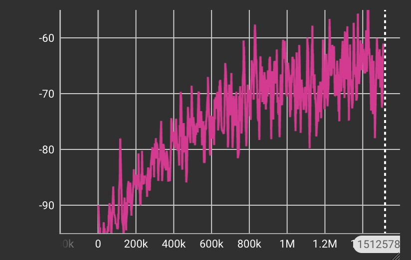

Random policy baseline results
Overview
This page presents baseline results for a random policy on robotic manipulation tasks used in the 16-831 course project. The purpose of this baseline is to illustrate the difficulty of the environments and provide a reference point for subsequent reinforcement learning experiments.
Experimental setup
- Environments: PandaReach, PandaPush, PandaPickAndPlace
- Policy: Random
- Runs: 3
- Episodes per run: 20
- Metric: Mean episodic return
Quantitative results
| Task | Run 1 | Run 2 | Run 3 |
|---|---|---|---|
| PandaReach | -7.371 | -9.279 | -7.636 |
| PandaPush | -8.545 | -8.651 | -8.566 |
| PandaPickAndPlace | -8.726 | -8.366 | -10.878 |
Report 2: problems with the dataset
We observe a major issue in the dataset where some Push and Pick-and-Place episodes initialize objects very close together, causing false success signals. This leads to degenerate policies where the agent learns to remain stationary.
Experiment 1: PPO + dense reward
We trained separate PPO agents on PandaReach, PandaPush, and PandaPickAndPlace using the default dense reward provided by the environment. Different training budgets were allocated (100K, 300K, and 1.5M steps respectively) to account for increasing task complexity.



PPO with dense rewards successfully solves the Reach task reaching 100% success rate. However, performance degrades significantly on Push and Pick & Place achieving only 10% and 5% respectively, highlighting the limitations of relying solely on dense distance-based rewards for long-horizon manipulation tasks.
Experiment 2: PPO + custom reward
We trained PPO agents using a custom shaped reward that decomposes the task into intermediate sub-goals: (1) minimizing distance from the end-effector to the object, (2) rewarding first contact with the object, (3) minimizing object-to-target distance, and (4) rewarding successful task completion. This staged reward provides more informative feedback across the trajectory.


With the custom reward, PPO reliably learns the Reach task and achieves a 100% success rate. While performance on Push and Pick & Place remains limited achieving 4% and 2% success rate respectively, the videos reveal meaningful progress—particularly in the agent consistently moving toward and trying to grab the object. This suggests that the shaped reward improves exploration and credit assignment, although the reward function can be improved which we will carry out in the next report.
Experiment 3: SAC (baseline)
We trained separate Soft Actor-Critic (SAC) agents on the all 3 tasks using dense rewards provided by the library.



SAC demonstrates improved sample efficiency compared to PPO, particularly in the Push task achiving 16% accuracy. However, without additional techniques, it still struggles to solve more complex manipulation tasks such as Pick and Place.
Experiment 4: SAC + HER
We augment SAC with Hindsight Experience Replay (HER) with sparse rewards, which relabels failed trajectories as successful by redefining goals post hoc. This is particularly effective in sparse or long-horizon settings.

HER significantly enhances performance on Push by optimizing learning from failed attempts. Our initial validation of the SAC + HER pipeline on the Push task yielded a 50% success rate despite the presence of invalid data points. Following this baseline, we scaled the next experiment to include Pick & Place and implemented a data-cleaning step to further improve accuracy.
Experiment 5: SAC + HER (improved dataset)
To refine the SAC + HER training, we implemented a manual distance check between blocks within the dataloader. By resetting episodes when blocks are too close, we successfully filtered out erroneous data points that previously degraded performance.


SAC + HER reached 89% accuracy on Push/Reach and 48% on Pick and Place, surpassing previous results. The improvement suggests earlier models were negatively reinforced into inactivity by incorrect data points.